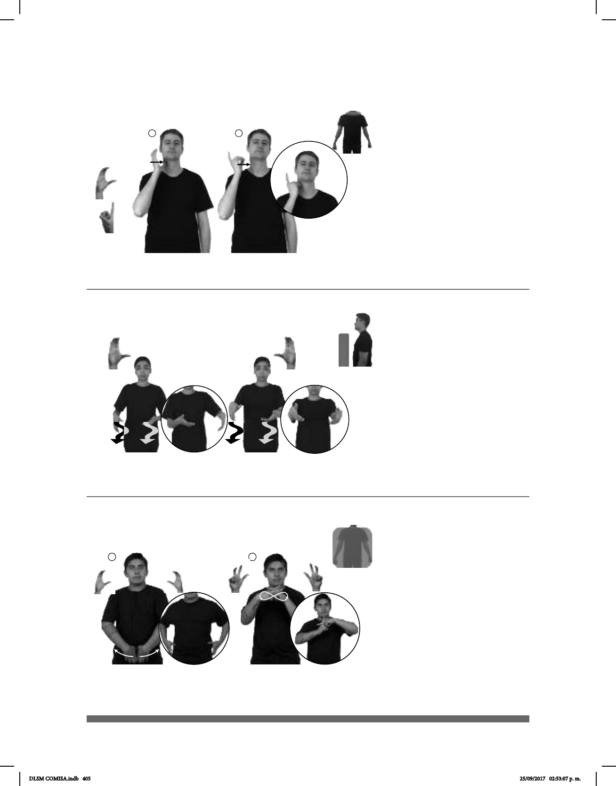

405
1 2
Seña: SM
Seña que pasa de C.1
Palma hacia la izquierda.
Sobre el cuello.
La mano simula un
salto.
sust. f. Organismo
gubernamental que pertenece al poder
legislativo de los países con parlamentos
bicamerales. En México es la Cámara
baja del Congreso de la Unión.
(C-28)
DESPUÉS CÁMARA-DE-DIPUTADOS pro-YO IR
Yo iré después a la Cámara de Diputados.
(C-29)
Seña: SS
C.3
Palmas hacia el centro.
A la altura de la cintura.
Las manos siguen una
trayectoria ondulada hacia el frente.
1. sust. m. Lugar por
donde se va, a pie o en algún medio de
transporte, de un lado a otro,
particularmente el de tierra o rústico. 2
sust. f. Camino amplio y
pavimentado construido para la
circulación de vehículos, que
comunica ciudades, pueblos, etc.
CALLE CL:55
gran cantidad de personas
PERRO
Hay muchos perros en el camino.
Seña: SC: I. SS; II. SB
I. Las palmas inician hacia adentro y
terminan hacia el centro; II. Palmas hacia abajo.
I. A la altura de la cintura; II. MD y
MB a la altura del pecho.
I. Las manos parten de un mismo
punto y luego se abren hacia los lados; II. MD y
MB los dedos se entrelazan y las muñecas siguen
una trayectoria ondulada.
1. sust. Persona que en una
competencia deportiva la cual combina
disciplinas de combate y artes escénicas – lucha
libre – obtiene la victoria o supera a todos los
demás competidores. 2. sust. m. En una
competencia de lucha libre, objeto que sujeta la
cintura utilizado para distinguir al campeón de los
demás luchadores.
(C-30) /
HOY LUCHA-LIBRE CINTURÓN-DE-CAMPEONATO
La lucha de hoy es por el cinturón de campeonato.
DLSM COMISA.indb 405 25/09/2017 02:53:07 p. m.